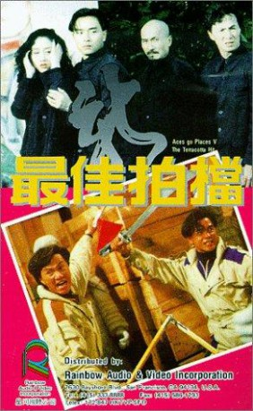
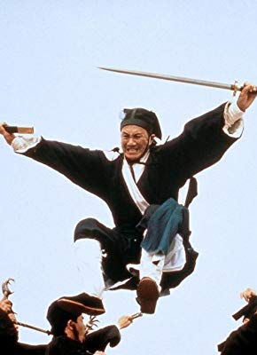
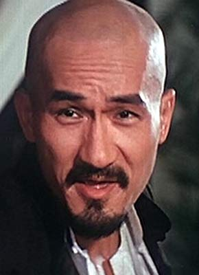
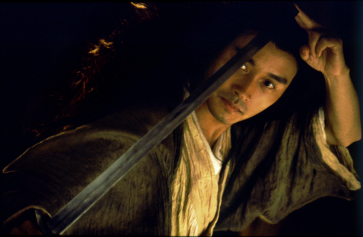
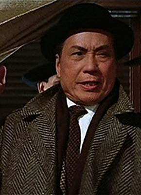
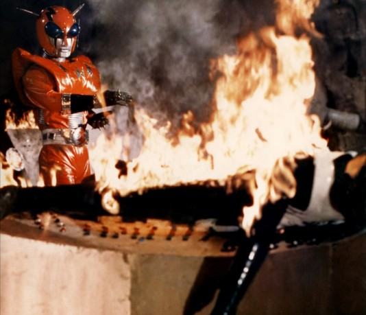
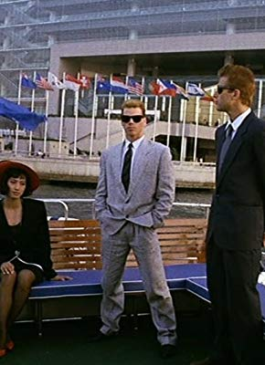
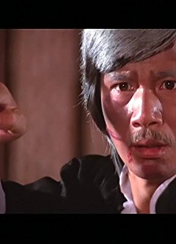
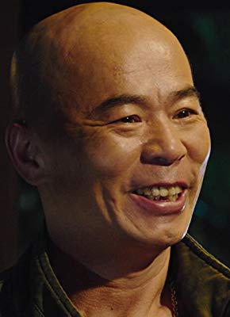

#11890 Mad Mission 5
Alternativ: Mad Mission V: The Terracotta Hit (Englischer Titel)
 
 IMDB-Wertung: 5.5 / 10
IMDB-Wertung: 5.5 / 10  Metascore: 0
Metascore: 0 
King Kong (Samuel Hui) and Albert "Baldy" Au (Karl Maka) were framed for robbery by brother and sister thieves (Leslie Cheung and Nina Li Chi), taking possession of a magnificent sword from antiquities smugglers. The smugglers attempt to hunt down Kong and Baldy, just as they were being pursued by the Hong Kong Police for their supposed "crime." Kong and Baldy managed to reprimand the brother/sister duo, but were all ultimately apprehended by the authorities and sent to a prison in China, putting their innocence and freedom in jeopardy.
Jahr: 1989
Dauer: 102 Minuten
FSK: 16
Land: Hong-Kong Studio: Laser ParadiseTonspuren:
Untertitel:
Auflösung: 1080p (1920x800) Größe: 6717 MB
Genre: Action, Komödie, Krimi
Regisseur: Chia-Liang Liu
Drehbuch: Kwok Chi Tsang
Soundtrack: Teddy Robin Kwan, Richard Lo
Darsteller:
-  Samuel Hui als King Kong
-  Karl Maka als Albert Au 'Baldy'
-  Leslie Cheung als Brother Thief
- Nina Li Chi als Sister Thief
- Conan Lee als Chinese Rambo
- Chi Jan Ha als Rambo's assistant
-  Tat-Wah Cho als Uncle Wah
- Ellen Chan als Ellen
- Fennie Yuen als Baldy's niece
-  Danny Lee als Prisoner
 Roy Cheung als Murderer King
Roy Cheung als Murderer King- Brad Kerner als Caucasian Boss
- Melvin Wong als Boss's aide
-  Mark Houghton als Boss's thug
- Billy Chong als Boss's thug
- James Jim-Si Ha als Boss's thug
-  Chia Yung Liu als Xiong Xin-Xin
-  Xin Xin Xiong als Thai horse rider
- Yan Lu als Lui Yin
- Maria Cordero als Woman in window
- Deborah Grant als Deborah
- Wayne Archer als Boss's thug
- Bruce Fontaine als Boss's thug
- Montatip Kaewprasert als May
- Chartchai Panthong als May's groom
- Surachai Kaewchusin als Richman
- Witsanu als Bridesman
- Jim James als Police officer
- Ernst Mausser als Police officer
Datei: X:\NEU\Mad Mission 5 (1989, FSK16, 1920x800).mkv seit 08.10.2019
 Es gibt insgesamt 187 Filme in der Gruppe 'NEU'
Es gibt insgesamt 187 Filme in der Gruppe 'NEU'